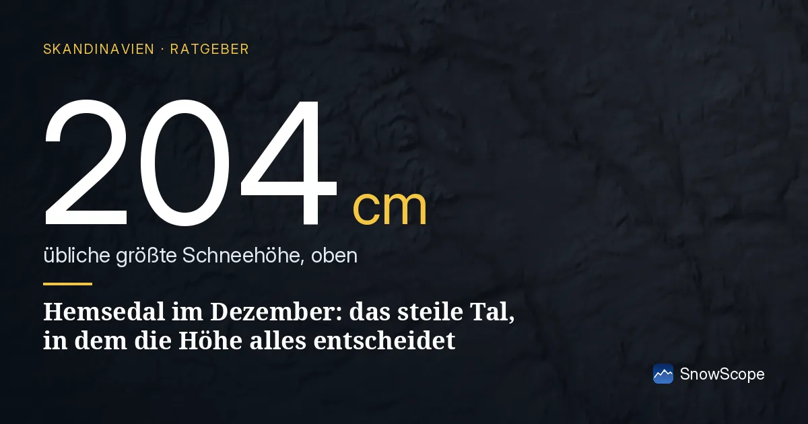
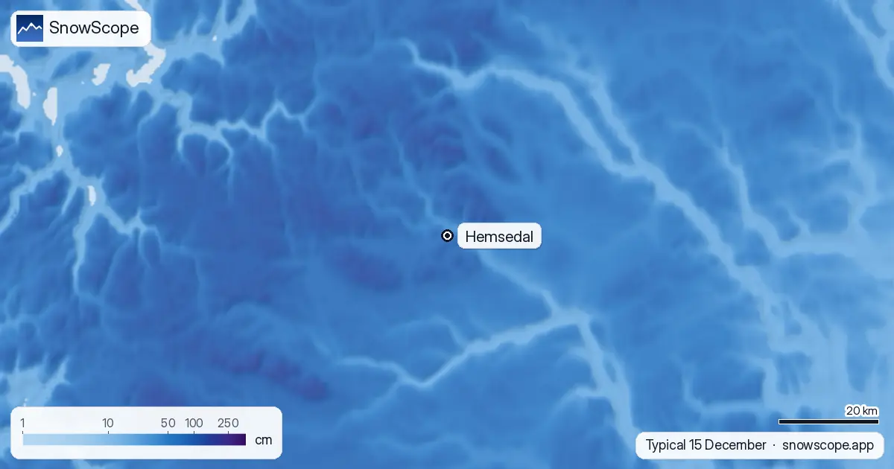

Hemsedal im Dezember: das steile Tal, in dem die Höhe alles entscheidet
Wer in Hemsedal im Dezember hinauffährt, fährt durch drei verschiedene Winter. An einem typischen 15. Dezember liegen laut unserer Schneehistorie über 46 Winter 32 cm an der Talstation auf 640 m, 70 cm an der Mittelstation (1039 m) und 106 cm am Gipfel auf 1439 m. Diese Leiter ist die ganze Dezembergeschichte hier.
Die Live-Schneeprognose für Hemsedal in der SnowScope-AppSchneehöhen, Pulverschnee-Alarme und 3D-Karte, gratis.
Vom Talboden bis zum Gipfel
Hemsedal hat rund 800 m Höhenunterschied, 48 km kartierte Pisten und 22 Lifte – viel für Norwegen. Unsicher ist der Dezember im Tal: 57 % unserer Winter hatten dort in der Woche vom 15. bis 21. Dezember 30 cm, und in 3 von 46 Wintern war der Boden am 15. Dezember aper.
Die Mittelstation ist eine andere Welt: 98 % der Winter hatten in dieser Woche mindestens 30 cm, und selbst ein mageres Jahr (1 von 10) hatte am 15. Dezember 48 cm. Am Gipfel hatte jeder unserer Winter in jeder Dezemberwoche 30 cm.


Die Dezemberwochen, die passen
Weil die Mittelstation so früh eingeschneit ist, passt fast jede Dezemberwoche, wenn du ab der Mitte aufwärts fährst. Der übliche erste Tag mit 30 cm an der Mittelstation ist der 4. November. Für tiefen Schnee: In der Weihnachtswoche lagen an der Mittelstation in 85 % unserer Winter 60 cm oder mehr.
Im Tal wartest du besser auf die zweite Monatshälfte: Der Anteil mit 30 cm steigt von 46 % in der ersten Woche auf 65 % in der Weihnachtswoche.
Früher und heute
Die oberen Hänge von Hemsedal haben wenig verloren: Das Dezembermittel an der Mittelstation ging von 75 cm in den ersten 15 Wintern auf 66 cm in den letzten 15, und jede Weihnachtswoche der letzten 15 Winter hatte dort 30 cm. Das Tal verlor mehr, von 45 cm auf 23 cm. Im letzten Winter lagen an der Mittelstation am 15. Dezember 61 cm.
Geld
Die Skipässe für Hemsedal werden mit dynamischen Preisen im offiziellen Onlineshop des Betreibers verkauft. Am 13. November 2026 konnten wir auf der offiziellen Seite keinen festen Betrag ablesen, deshalb nennen wir hier keinen. Früh und online buchen und die Weihnachtsferien meiden, wenn der Preis zählt.
Geilo im Vergleich
Geilo auf der Hochebene im Süden ist sanfter und gleichmäßiger. Seine Talstation (779 m) hatte in der Woche vom 15. bis 21. Dezember in 80 % der Winter 30 cm – besser als Hemsedals Tal –, aber sein Gipfel (1163 m) liegt tiefer, mit 68 cm an einem typischen 15. Dezember. Die offizielle Seite von Geilo zeigt Tageskarten ab 590 NOK (rund 56 EUR zum Euro-Referenzkurs vom 12. November).
Für steiles Gelände und tiefen Schnee oben: Hemsedal. Für entspanntes Familienskifahren mit Schnee bis ins Dorf und einem bekannten Einstiegspreis: Geilo.
Tipps für Skifahrer
- Anfang Dezember ab der Mittelstation aufwärts fahren; bei dünnem Tal mit dem Lift hinunter.
- Den Skipass so früh wie möglich online kaufen; die Preise ändern sich je nach Datum.
- Steiles Gelände nach Schneefall: vor dem Verlassen der Piste die norwegische Lawinenwarnung (varsom.no) lesen.
- Kurze Tage: am ersten Lift stehen und die besten Abfahrten vor dem Mittag planen.
Weitere Karten (externe Seiten)
Quellen und Nachweise
- Hemsedal: official lift-pass page of the operator (prices by date; no fixed price quoted), checked 13 November 2026 www.skistar.com/en/winter/skipass/buy-skipass/lift-pass-hemsedal/
- Geilo: official lift-pass prices (2026-27), checked 13 November 2026 www.skigeilo.no/en/ski-pass
- European Central Bank euro reference rates (2026-11-12) www.ecb.europa.eu/stats/policy_and_exchange_rates/euro_reference_exchange_rates/html/index.en.html
Zu diesen Zahlen
Schneewerte: SnowScope-Schneehistorie, 46 vergangene Winter (1980-81 bis 2025-26) auf den Höhen des Skigebiets, höhenkorrigiert (eine Schätzung für eine Fläche, keine Meldungen des Skigebiets); „guter Schnee“ = im Wochenmittel 30 cm oder mehr am Boden. Karte: unsere übliche Schneehöhe am 15. Dezember, nach Höhe auf das Gelände verteilt. Pisten und Lifte: OpenSkiMap-Kartierung. Skipasspreise: offizielle Preislisten der Skigebiete, geprüft am 13. November 2026; Preise können sich ändern.
Offizielle Lawinenlageberichte: Varsom (NVE)
Diesen Bericht zitieren
Für Forschung, Lehre oder Presse: Zahlen und Grafiken sind unter CC BY 4.0 mit dieser Quellenangabe frei nutzbar.
SnowScope (2026), Hemsedal im Dezember: das steile Tal, in dem die Höhe alles entscheidet, https://snowscope.app/blog/de/2026/11/hemsedal-december-skiing-snow-depth-price.html, abgerufen am 2026-11-14
SnowScope (Atlas Labs). (2026, November 14). Hemsedal im Dezember: das steile Tal, in dem die Höhe alles entscheidet. SnowScope snow reports. https://snowscope.app/blog/de/2026/11/hemsedal-december-skiing-snow-depth-price.html
BibTeX
@misc{snowscope2026hemsedaldecemberskiingsn,
author = {{SnowScope (Atlas Labs)}},
title = {Hemsedal im Dezember: das steile Tal, in dem die Höhe alles entscheidet},
year = {2026},
month = nov,
howpublished = {\url{https://snowscope.app/blog/de/2026/11/hemsedal-december-skiing-snow-depth-price.html}},
note = {Published 2026-11-14 13:29 UTC; accessed 2026-11-14}
}· CC BY 4.0 · Methoden, Daten und Werkzeuge →
Hemsedal: Schnee und Temperatur nach Höhe, dieser Winter vs letzter (Werkzeuge) →
Hemsedal folgen
Gratis: eine Nachricht, wenn Neuschnee kommt, und jeden Morgen die Vorhersage.